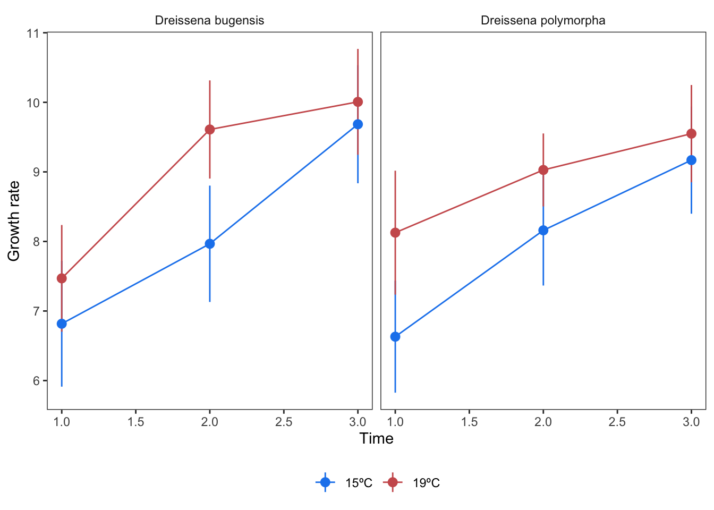
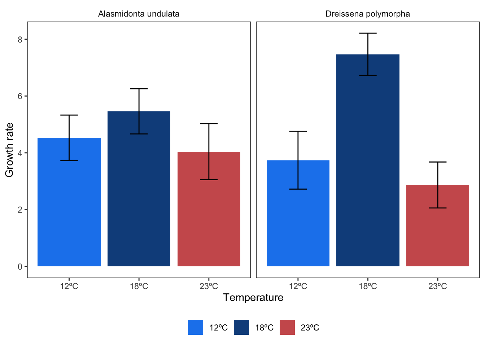

Universal extraction challenges
XXX
There are a suite of challenges, regardless of effect size type, that challenge accurate and robust meta-analysis. We’ll discuss some of them here. Note that many of our examples pertain especially to the ecology and evolution literature yet we suspect may be more pervasive and widespread.
Sample size
One of the biggest challenges of data extraction is figuring out the sample size. This is non-trivial. Sample size is essential to accurately calculate effect sizes and sampling variance.
Not only can sample size be incredibly difficult to determine from the text of a paper, it can also be hard to know what the actual unit of replication is. While sample size might be conceptually straightforward with behavioral or physiological data, where the unit of replication is generally the number of individuals, it can become incredible complex with plot data or survey data.
For example, meta-analyzing vegetation plot data may find some studies that make their plots the unit of replication (pooling data from subplots) while others make subplots the unit of replication (and control for non-independence with their own model random effects).
Likewise, imagine you are meta-analyzing the effects of some treatment (say logging) on vertebrate abundance. Some studies did spotlight surveys from a vehicle (where sample size would intuitively be the number of survey nights or survey kilometers) while other studies did camera trapping (where the sample size would be number of camera trap nights or number of camera trap locations). Are these two sample sizes comparable? We don’t know-but probably not. There are likely way more camera trap nights than spotlight surveys yet the camera traps only cover a small field of view (but for many nights) while the spotlight surveys could cover dozens of kilometers (but over fewer nights).
We recommend recording the unit of replication (e.g., individual, plot, subplot, survey) in your dataset. This information can be used for sensitivity analyses and subgroup analyses.
Measurement scale
Another issue that haunts vegetation meta-analyses is plot size. Studies with larger plots (e.g., 100 m2) will have a smaller sample size than studies with small plots (e.g., 10 m2) for an equal effort. Likewise, some studies will not use areal plots at all but will instead use transects.
There is currently no statistical solution for these scale challenges in meta-analysis. For that reason, we recommend digitizing plot-size when conducting a meta-analysis on vegetation data. Plot size can be used as a moderator or for subsetting your dataset. You’ll also notice, if thinking about this problem, that measurement scale does not operate alone but in interaction with plant size—a 100 m2 plot in a grassland is very different than a 100 m2 plot in an old growth forest.
In all these cases, the meta-analyst should be prepared to thoroughly extract, perhaps over multiple columns, the various dimensions of sample size that may haunt the articles in their study. These columns can be used for sensitivity analyses.
Also note that sample size is necessary to convert author-provided measurements of standard error to standard deviation. For that reason, the meta-analyst must do their utmost to determine the sample size used by the authors to calculate standard error, if that is what they reported.
Let’s imagine that an article presented standard error based on one measure of sample size (let’s say subplots) however the rest of your dataset uses plot N as sample size. Can you convert the standard error to standard deviation using the author-sample size but then use the plot-N for the actual calculation of sampling variance?
Complex non-independence structures
Also check this: https://royalsocietypublishing.org/rsta/article/384/2321/20240604/481953/A-preliminary-data-analysis-workflow-for-meta
One of the many challenges in extracting data for meta-analysis is that studies often report multiple measurements of the same phenomena, e.g., through time or from independent plots. These situations must be controlled for with random effects—or with clear and transparent rules on how to choose which data to extract.
Repeated measurements
Time series random effects are fairly straightforward to implement in the primary frequentist package for meta-analytic models (metafor and rma.mv, ref). Controlling for them requires creating a time series column with a simple numeric value that describes temporal ordering of measurements (e.g., 1, 2, 3, 4). An additional column should provide a grouping variable.
To illustrate, let’s imagine we are assessing the influence of temperature on the growth rates of clams. A study reports an experimental trial for two species (zebra mussels and quagga mussels), each through time. The control is ambient conditions while the treatment is increased temperature. These are moderators we are explicitly interested in. Imagine the results of this study look like this:
In this case, you have two independent species and three dependent time points per species. We would most likely extract all of the data from both panels of this figure, and produce a table like this. Note that we recommend extracting data in a wide format, so that each paired value (control and treatment per species and time point) is clearly associated, allowing for easy effect size calculation.
| article_id | fig | species | experiment_id | time_sequence | temperature_low | temperature_high | mean_low | sd_low | n_low | mean_high | sd_high | n_high |
|---|---|---|---|---|---|---|---|---|---|---|---|---|
| article_1 | fig 1 | Dreissena bugensis | Dreissena bugensis experiment | 1 | 15ºC | 19ºC | 6.822585 | 0.8301905 | 15 | 8.567400 | 0.8334899 | 15 |
| article_1 | fig 1 | Dreissena bugensis | Dreissena bugensis experiment | 2 | 15ºC | 19ºC | 6.904332 | 0.6927589 | 15 | 9.099549 | 0.7635677 | 15 |
| article_1 | fig 1 | Dreissena bugensis | Dreissena bugensis experiment | 3 | 15ºC | 19ºC | 8.822036 | 0.8471211 | 15 | 9.059753 | 0.7961158 | 15 |
| article_1 | fig 1 | Dreissena polymorpha | Dreissena polymorpha experiment | 1 | 15ºC | 19ºC | 6.382664 | 0.8024598 | 15 | 7.891689 | 0.7446472 | 15 |
| article_1 | fig 1 | Dreissena polymorpha | Dreissena polymorpha experiment | 2 | 15ºC | 19ºC | 7.588446 | 0.6665940 | 15 | 8.978509 | 0.7907803 | 15 |
| article_1 | fig 1 | Dreissena polymorpha | Dreissena polymorpha experiment | 3 | 15ºC | 19ºC | 8.366114 | 0.7689011 | 15 | 9.069762 | 0.8051406 | 15 |
Note that we have a column for the article (article_id), a column describing where in the article the data came from (fig), a column recording the species (species), an id for the experiment (which was unique to each species) and the time sequence (time_sequence) within that experiment. The experiment id might need to be more complex, e.g., if there were several independent experiments crossed with other treatments (e.g., salinity, or independent field sites or trials that are reported separately).
These columns control our non-independence structures within this study. We also have the statistics necessary for our effect size calculations (mean_*, sd_*, n_*) for each temperature treatment. And we have two columns that can be used to construct moderators (temperature_high and temperature_low).
Multiple comparisons to same control
Let’s imagine the next study in this same meta-analysis has two different temperature treatments compared to the same control, again for two different species (one of which is in the first study). In this case, they do not report repeated measures. Their figure might look like this:

Here we have a different looking plot, with two treatment temperature (18ºC and 23ºC) compared to the same control (12ºC). Again, we have two different species and no repeated measures. We would recommend extracting the data to look like this:
| article_id | fig | species | control_id | experiment_id | temperature_low | temperature_high | mean_low | sd_low | n_low | mean_high | sd_high | n_high |
|---|---|---|---|---|---|---|---|---|---|---|---|---|
| article_2 | fig s1 | Alasmidonta undulata | shared_control_Alasmidonta undulata | Alasmidonta undulata experiment | 12ºC | 18ºC | 4.530116 | 0.7994341 | 25 | 5.458801 | 0.7952347 | 25 |
| article_2 | fig s1 | Alasmidonta undulata | shared_control_Alasmidonta undulata | Alasmidonta undulata experiment | 12ºC | 23ºC | 4.530116 | 0.7994341 | 25 | 4.039803 | 0.9853909 | 25 |
| article_2 | fig s1 | Dreissena polymorpha | shared_control_Dreissena polymorpha | Dreissena polymorpha experiment | 12ºC | 18ºC | 3.739187 | 1.0186992 | 25 | 7.469025 | 0.7433303 | 25 |
| article_2 | fig s1 | Dreissena polymorpha | shared_control_Dreissena polymorpha | Dreissena polymorpha experiment | 12ºC | 23ºC | 3.739187 | 1.0186992 | 25 | 2.866959 | 0.8087976 | 25 |
This dataset has a control_id which specifies that these data share a control. This can be used in your random effect formulation.
The combined dataset with both studies would look like this. Note that the time_sequence column for the second study is populated with ‘1’, while the control id for the first study is given a unique value per row.
| article_id | fig | species | experiment_id | time_sequence | temperature_low | temperature_high | mean_low | sd_low | n_low | mean_high | sd_high | n_high | control_id |
|---|---|---|---|---|---|---|---|---|---|---|---|---|---|
| article_1 | fig 1 | Dreissena bugensis | Dreissena bugensis experiment | 1 | 15ºC | 19ºC | 6.822585 | 0.8301905 | 15 | 8.567400 | 0.8334899 | 15 | unique_control1 |
| article_1 | fig 1 | Dreissena bugensis | Dreissena bugensis experiment | 2 | 15ºC | 19ºC | 6.904332 | 0.6927589 | 15 | 9.099549 | 0.7635677 | 15 | unique_control2 |
| article_1 | fig 1 | Dreissena bugensis | Dreissena bugensis experiment | 3 | 15ºC | 19ºC | 8.822036 | 0.8471211 | 15 | 9.059753 | 0.7961158 | 15 | unique_control3 |
| article_1 | fig 1 | Dreissena polymorpha | Dreissena polymorpha experiment | 1 | 15ºC | 19ºC | 6.382664 | 0.8024598 | 15 | 7.891689 | 0.7446472 | 15 | unique_control4 |
| article_1 | fig 1 | Dreissena polymorpha | Dreissena polymorpha experiment | 2 | 15ºC | 19ºC | 7.588446 | 0.6665940 | 15 | 8.978509 | 0.7907803 | 15 | unique_control5 |
| article_1 | fig 1 | Dreissena polymorpha | Dreissena polymorpha experiment | 3 | 15ºC | 19ºC | 8.366114 | 0.7689011 | 15 | 9.069762 | 0.8051406 | 15 | unique_control6 |
Tricky business, right?
Now, to demonstrate how we’d control for these non-independence structures, let’s calculate an effect size (SMD) and run a model. Note we have complex non-independence structures here. One of the same species shows up in both studies (so becomes a crossed random effect), we have time sequences nested within an experiment id, and we have a shared control id. Messy! Ultimately, we would likely want to add a phylogenetic dissimilarity matrix to control for phylogenetic distance between the species. But let’s leave that out for now :)
Note that the struct argument in rma.mv specifies the correlation structure to apply to time series.
library("metafor")
# First calculate effect size:
full_dat <- escalc(measure = "SMD",
m1i = mean_low, m2i = mean_high,
sd1i = sd_low, sd2i = sd_high,
n1i = n_low, n2i = n_high,
data = full_dat) |> setDT()
# Calculate difference in temperature to use as a moderator:
full_dat[, temperature_diff := as.numeric(gsub("ºC", "", temperature_high)) - as.numeric(gsub("ºC", "", temperature_low))]
# Add a unique ID for each effect size:
full_dat[, effect_size_id := 1:.N]
# Model
m <- rma.mv(yi ~ temperature_diff,
V = vi,
random = list(~1 | article_id / experiment_id / control_id / effect_size_id,
~1 | species,
~time_sequence | experiment_id),
dfs = "contain",
test = "t",
method = "ML",
struct = "AR",
data = full_dat)
summary(m)
Multivariate Meta-Analysis Model (k = 10; method: ML)
logLik Deviance AIC BIC AICc
-15.4312 31.2721 48.8624 51.5857 228.8624
Variance Components:
estim sqrt nlvls fixed
sigma^2.1 0.0000 0.0000 2 no
sigma^2.2 0.0000 0.0000 4 no
sigma^2.3 0.0000 0.0000 8 no
sigma^2.4 1.0688 1.0338 10 no
sigma^2.5 0.0000 0.0000 3 no
factor
sigma^2.1 article_id
sigma^2.2 article_id/experiment_id
sigma^2.3 article_id/experiment_id/control_id
sigma^2.4 article_id/experiment_id/control_id/effect_size_id
sigma^2.5 species
outer factor: experiment_id (nlvls = 3)
inner factor: time_sequence (nlvls = 4)
estim sqrt fixed
tau^2 0.0000 0.0000 no
rho -1.0000 no
Test for Residual Heterogeneity:
QE(df = 8) = 65.2610, p-val < .0001
Test of Moderators (coefficient 2):
F(df1 = 1, df2 = 8) = 6.8346, p-val = 0.0309
Model Results:
estimate se tval df pval ci.lb ci.ub
intrcpt -3.2493 0.8248 -3.9393 1 0.1583 -13.7297 7.2312
temperature_diff 0.3312 0.1267 2.6143 8 0.0309 0.0391 0.6234 *
---
Signif. codes: 0 '***' 0.001 '**' 0.01 '*' 0.05 '.' 0.1 ' ' 1These non-independence structures can be calculated separately as well with the function metafor::vcalc (which is preferred, especially if adding a phylogenetic or spatial dissimilarity matrix). See XXXXXX for a tutorial on how to use vcalc.
As you can see, non-independence structures can be very complex to handle, which can justify simply extracting the final time point from a time series or the time point with the largest difference. This can also justify using a single experimental treatment. These can also be filtered after extraction, if your data is tidy and easy to manage. However, the extra non-independent data may provide within-study and within-subject resolution on moderators that you are explicitly interested.
We recommend the following tutorial on thinking through random effects in meta-analysis: XXXXXX
Important
In the example above, we are forced to use the difference in temperature as a moderator. However, alternatively, we could have calculated Zr, after drawing the underlying data for each temperature treatment with the mean, standard deviation, and sample size (see (sec?)).
A third option would have been to use a totally different (and more unusual effect size): Q10. This effect size would have allowed us to capture the temperature difference explicitly, thus yielding simpler models and less overall heterogeneity.
For more discussion of how to accomodate experimental designs (so called nuisance heterogeneity) explicitly into your effect size calculations, instead of into your models see Noble et al 2022 and where we discuss this in brief ((sec?))
Database design
As you can see, one of the key considerations in performing a robust and accurate meta-analysis is good database design. Database design depends on your question, whether you plan to extract data for multiple effect size types (e.g., both discrete groups and continuous outcomes), what your rules for repeated measures and shared controls are, and so on.
We recommend that you do a pilot extraction, and analysis, of ~10% of your screened articles before extracting all of your articles. This pilot extraction will give your database a stress test and will help ensure that you are correctly digitizing complex non-independence structures and the covariates that you might be interested in.